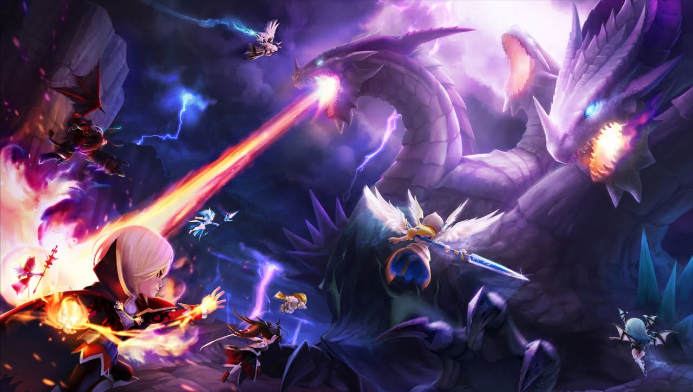
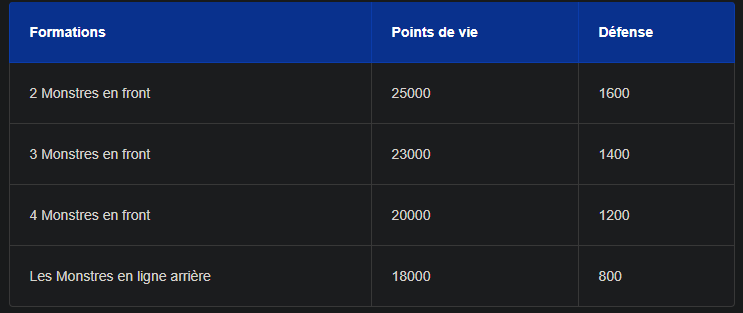
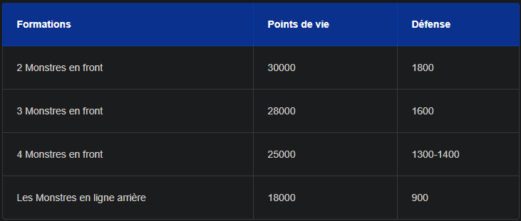

Qu'est ce que le Raid ?
Le raid est un contenu late game de Summoners War, qui vous offrira en guise de récompenses de quoi améliorer vos runes les plus précieuses.
Summoners War : la stratégie pour le Raid du Rift des mondes Dans Summoners War, le Raid est un contenu PVE à faire avec l'aide de deux autres joueurs. On vous conseillera donc de vous lancer dans le raid après le Géant B10 et le Dragon B10 car il vous
faudra de très bonnes stats de base en prérequis. Le raid vous permettra donc de meuler ou gemmer vos runes afin d'augmenter de façon considérable leurs propriétés.

Comment réussir son Raid ?
Pour réussir un raid, il vous faudra vous concentrer sur des compétences ou leader skills afin de dominer le combat. Voici la composition de l'équipe-type ainsi que les rôles nécessaires au bon déroulement de l'affrontement :
- Un anti-soin sur la compétence 1, avec Dias ou Colleen, par exemple
- Un monstre réduisant les dégâts reçus grâce à son passif tel que Dias ou Darion
- Deux supports soigneurs ou cleansers (qui supprime les débuffs)
- Un réducteur de vitesse tel que Hwa ou Xiao Lin
- Un ou deux gros DPS, qui frappent en fonction des debuffs, tels que l'Homunculus ou Xiao Lin
- Concernant les Compétences leaders; seules trois sont vraiment utilisées:
- Le lead défense comme celui fourni par Xiong Fei ou Bastet
- Le lead Taux critique comme celui de Hwa
- Le lead Résistance comme celui de Dias
En raid, il vous faudra aussi utiliser des formations particulières. Vous devrez mettre vos monstres supports en "front" (1ère ligne) et les DPS moins endurants en 2e ligne.
Statistiques requises pour le 4e étage du Raid

Statistiques requises pour le 5e étage du Raid
